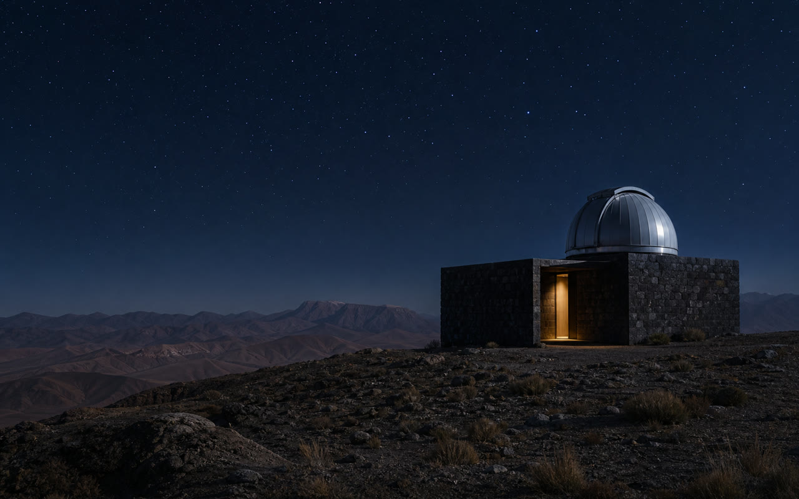

OBSERVATORY NIGHT · 09/27
NOCTURNE
FIELD PASS RIDGE ACCESS · AFTER DARK
A–041
FIELD PASS RIDGE ACCESS · AFTER DARK

OBSERVATORY NIGHT · 09/27Move the pointer across the pass, drag it by touch, or use the arrow keys to inspect its perspective and laminate. Press Home or Escape to reset.
VanillaTilt · real glare real input maps to card perspective and laminate light